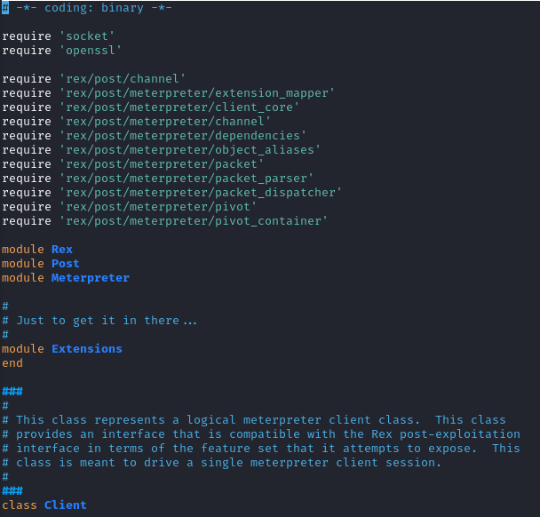

meterpreter source code
The meterpreter source code is contained in the folder:
/usr/share/metasploit-framework/lib/rex/post/meterpreter/
The first script file that is loaded when we run meterpreter is
meterpreter library/usr/share/metasploit-framework/lib/rex/post/meterpreter.rb
contained in:
/usr/share/metasploit-framework/lib/rex/post/meterpreter/client.rb
This class represents a logical meterpreter client class.
This class provides an interface that is compatible with the Rex post-exploitation interface in terms of the feature set that it attempts to expose.
This class is meant to drive a single meterpreter client session: 1) Initializes the client context with the supplied socket through which communication with the server will be performed
2) Cleans up the meterpreter instance, terminating the dispatcher thread
3) Initializes the meterpreter client instance
4) ....
Note: in the chapter that will follow we have executed the commands in the pry shell, but when we are using these commands in Metasploit modules
we need to specify clientexampleclient.sys.config.getprivs
client.fs.dir.pwd
client.net.config.get_interfaces